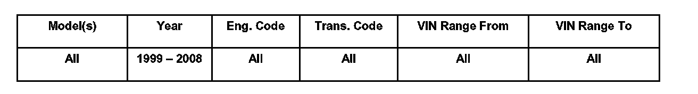
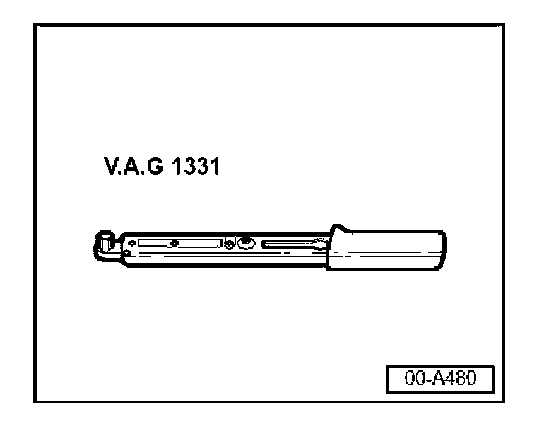
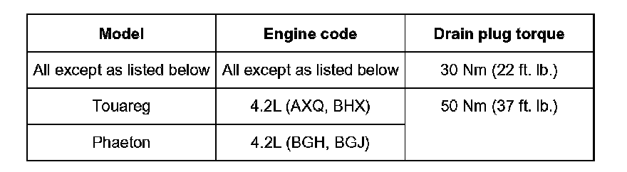
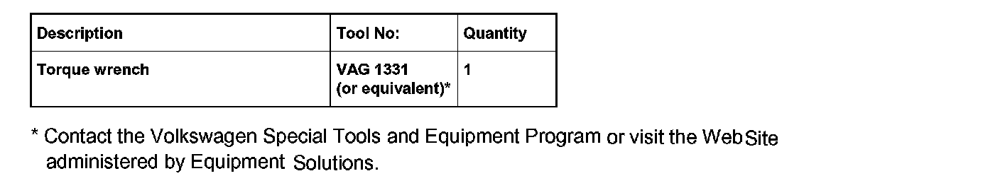

Engine - Oil Drain Plug Thread Cleaning
Condition
17 07 05
Mar. 2, 2007
2010621 supersedes Technical Bulletin Group 17, number 04-04 dated Dec. 3, 2004 due to additional models and inclusion in ElsaWeb.
Oil Pan Drain Plug, Cleaning Threads on Plug and Oil Pan When Changing Oil
Technical Background
Engine oil leaks are found after engine oil is changed.
This condition may be caused by contaminants on the threads of the oil drain plug or the oil pan (if both are not cleaned before installing and tightening the oil drain plug to the proper torque).
Production Solution
N/A
Service
After draining engine oil:
^ Clean any contaminants from both oil drain plug and oil pan drain hole threads.
^ Carefully inspect drain plug and oil pan threads for damage.
^ If drain plug is damaged, replace it along with drain plug seal.
^ Replace either drain plug with seal, or drain plug seal only (if available separately), as necessary.
Tip:
Always see ETKA for the latest part(s) information.
Note:
In some cases the drain plug comes with an integral (permanent) seal and must be replaced as a unit.
Never install a drain plug sealing ring from another application (always consult ETKA for the appropriate drain plug / sealing washer combination).

^ Install oil drain plug and hand-tighten first. Then, using a torque wrench, tighten to the proper specification as listed in the table below. See Required Parts and Tools.
Note:
Always clean contaminants from both oil drain plug and oil pan drain hole threads. Never use air tools to install the oil drain plug, as damage to the oil pan can occur.
Do not exceed the specified torque. Exceeding the specified torque may damage the oil pan or bend the sealing washer, which can lead to leaks at the drain plug.

Oil pans with damaged threads will not be covered under Warranty.
Engine oil, filling
To prevent overfilling, for all engines:
^ Add approximately 1/2 quart (or liter) less than capacity.
^ Start engine and let run until engine operating temperature is approximately 60°C (140°F), switch ignition off.
^ Wait about three minutes.
^ Check level on oil dipstick and fill to dipstick full mark. This may be even more or less than 1/2 quart (or liter), depending on engine.
Warranty
Information only
Required Parts and Tools

No special parts required. Always see ETKA for the latest part(s) information.